We are going to make a "Guess the Number" game. In this game, the computer will think of a random number from 1 to 20, and ask you to guess the number. You only get six guesses, but the computer will tell you if your guess is too high or too low. If you guess the number within six tries, you win.
Because this program is a game, we'll call the user the player.
First, type this code in exactly as it appears here, and then save it by clicking on the File menu and then Save As. Give it a file name like, guess.py. Then run it by pressing the F5 key. Don't worry if you don't understand the code now, I'll explain it step by step.
Be sure to type it exactly as it appears. Some of the lines don't begin at the leftmost edge of the line, but are indented by four or eight spaces. Be sure to put in the correct amount of spaces for the start of each line.
Some of these lines are too long to fit on one line in the page, and it wraps around to the next line. When you type them into the file editor, type these lines of code all on the same line. You can tell if a new line starts or not in this book by the line numbers on the left side. For example, this has only two lines of code, even though the first line wraps around:
|
Here is the text from a sample run of this game. The text that the program prints out is in blue, and the text that the player types in is in black and in bold.
Hello! What is your name?
Albert
Well, Albert, I am thinking of a number between 1 and 20.
Take a guess.
10
Your guess is too high.
Take a guess.
2
Your guess is too low.
Take a guess.
4
Good job, Albert! You guessed my number in 3 guesses!
guess.py
- # This is a guess the number game.
- import random
- guessesTaken = 0
- print 'Hello! What is your name?'
- myName = raw_input()
- number = random.randint(1, 20)
- print 'Well, ' + myName + ', I am thinking of a number between 1 and 20.'
- while guessesTaken < 6:
- print 'Take a guess.' # There are four spaces in front of print.
- guess = raw_input()
- guess = int(guess)
- guessesTaken = guessesTaken + 1
- if guess < number:
- print 'Your guess is too low.' # There are eight spaces in front of print.
- if guess > number:
- print 'Your guess is too high.'
- if guess == number:
- break
- if guess == number:
- guessesTaken = str(guessesTaken)
- print 'Good job, ' + myName + '! You guessed my number in ' + guessesTaken + ' guesses!'
- if guess != number:
- number = str(number)
- print 'Nope. The number I was thinking of was ' + number
Even though we are typing in our source code into this file editor new window, we can still go back to the shell to type in individual instructions to see what they do. The interactive shell is very good for experimenting with different instructions when we are not running a program.
Let's look at each line of code.
- # This is a guess the number game.
This is a comment. Remember that Python will ignore everything after the # sign. This just reminds us what this program does.
- import random
This is an import statement. The import statement is not a function (it does not have parentheses after its name). The statement has a special Python keyword, like the print statement has, called the import keyword. Many functions like raw_input() are included with every Python program. But some functions exist in separate programs called modules. Modules are other Python programs that contain other functions that we can use. The import statement will add these modules their functions to our program.
The import statement is made up of the import keyword followed by the module name.
This line imports a module named random. The random module has several functions related to random numbers. We'll use one of these functions later to have the computer come up with a random number for us to guess.
- guessesTaken = 0
This creates a new variable named guessesTaken. We will store the number of guesses we've made in this variable. Since the player hasn't made any guesses so far, we will store the integer 0 here.
- print 'Hello! What is your name?'
- myName = raw_input()
These two lines are identical to our Hello World program. Programmers will often reuse code from their other programs when they need the program to do something similar. When these two lines are done executing, the string of the player's name will be stored in the myName variable. (Remember, the string might not really be the player's name. It's just whatever string the player typed in.)
- number = random.randint(1, 20)
Here we are calling a new function named randint(), and then storing the return value in a variable named number. Because randint() is one of the functions that the random module provides, we put random. (that is, the word "random" followed by a period) in front of it to tell our program the function is in the random module. The randint() function will return a random integer between (and including) the two integers we give it. Here, we give it the integers 1 and 20 between the parentheses that follow the function name (separated by a comma). Whatever the random integer that randint has returned is, it is stored in a variable named number.
Just for a moment, go back to the interactive shell and type import random to import the random module. Then type random.randint(1, 20) to see what the function call evaluates to. It will return an integer that between 1 and 20. Type it again, and the function call will probably evaluate to a different integer. This is because each time the randint() function is called, it will evaluate to some random number. This is like when you roll some dice, you will come up with a random number each time.
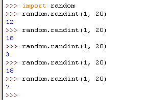
Whenever we want to add randomness to our games, we can use the randint() function. And we use randomness in most games. (Think of how many board games use dice.)
You can also try out different ranges of numbers by changing the arguments. Type random.randint(1, 4) to only get integers between 1 and 4 (including both 1 and 4). Or try random.randint(1000, 2000) to get integers between 1000 and 2000.
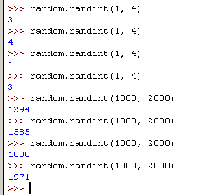
Be sure to type random.randint(1, 20) and not randint(1, 20), otherwise the computer will not know to look inside the random module for the randint() function. Then it will show you an error like below:
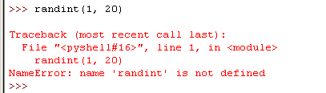
Remember, your program needs to run import random before it can call the random.randint() function. This is why import statements usually go at the beginning of the program.
The integers between the parentheses in the random.randint(1, 20) function call are called arguments. Some functions require that you pass them values when you call them. Look at these function calls:
raw_input()
random.randint(1, 20)
The raw_input() function has no arguments. The randint() function has two arguments. When we have more than one argument, we separate them by putting commas in between the arguments. Programmers say that the arguments are delimited (that is, separated) by commas. This is how the computer knows when one value ends and another begins.
If you pass too many or too few arguments in a function call, Python will display an error message. In the picture below, we first called randint() with only one argument (too few), and then we called randint() with three arguments (too many).
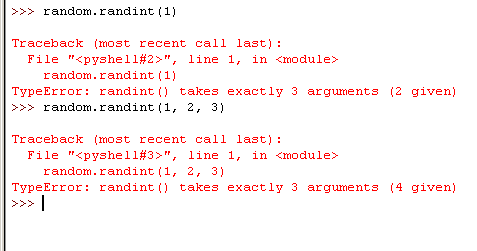
- print 'Well, ' + myName + ', I am thinking of a number between 1 and 20.'
This print statement welcomes the player by name, and tells them that the computer is thinking of a random number. Remember how I said the print statement only takes one string? It does. Look at the line carefully. The plus signs concatenate the three strings to evaluate down to one string, and that is the one string for the print statement. It might look like the commas are separating the strings, but if you look closely, you see that the commas are inside of the quotes and part of the strings themselves.
- while guessesTaken < 6:
This is a while statement. Like import, it has a special keyword to Python. The while statement is made up of the while keyword, followed by an expression, followed by a colon (the : sign). The next line after the while statement is the beginning of a while-block. The while-block is made up of the lines of code that have at least 4 or more spaces in front of it (which are lines 13 through 26). The expression next to the while keyword is also called a condition. Before we understand what is going on with this code, let's learn about blocks and conditions.
A block is made up of several lines of code grouped together. You can tell when the block begins and ends by looking at the line's indentation (that is, the number of spaces in front of the line). The block starts when the indentation of a line of code is more than the previous line. The block ends when the indentation returns to what it was before the block started. It is easier to see with a picture. This picture has each block highlighted with a different color:
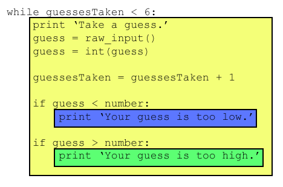
The lines of code inside the yellow box are all in the same block. Because this block follows the while statement, we call it a while-block. Blocks can contain other blocks. Notice that the yellow block contains the blue and green blocks. The blue and green blocks are still blocks, even though they only have one line of code and are inside another block. The Python interpreter knows when a block is finished because a line of code will have the same indentation before the block started.
It is important to get the indentation correct. Usually the indentation of a block is 4 spaces. The indentation of a block inside another block is 8 spaces. And the indentation of a block inside a block inside a block is 12 spaces. Notice that when we type code into IDLE, each letter is the same width. You can look at how many letters are on the line above or below to see how many spaces you have put in.
The indentation doesn't have to be 4 spaces more than the last indentation, but that is the convention (that is, the usual way of doing things) in the Python language.
Here is a picture of that same code, except now we have red boxes for each space to make it easier to count the spaces. The yellow block includes all the lines with at least 4 spaces in front. The blue block is the first line with 8 spaces of indentation. The green block is the second line with 8 spaces of indentation. Because there is a line with smaller indentation after the blue block, we know that the blue block has ended. This is why the blue and green blocks are separate blocks.
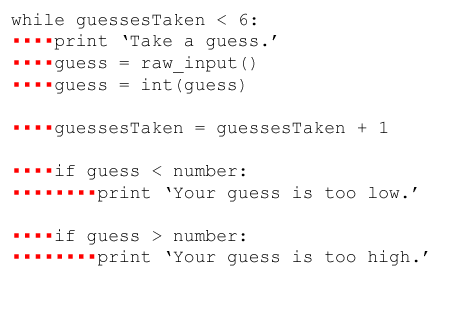
We call the block after the while keyword a loop block because when the program reaches the bottom of the block, it will loop back to the top. Then it rechecks if the condition is still true. If it is, our program enters the loop block again. If the condition is false, then our program jumps down to the line after the loop block. The loop block is also called a while-block, because it starts with the while keyword. You can learn what it means for a condition to be true or false in the next section.
Remember we were talking about this line of code, the while statement:
- while guessesTaken < 6:
I called the expression that came after the while keyword the condition. How do we know it is an expression? Because it contains two values (the value in the variable guessesTaken, and the integer value 6) connected by an operator (the < sign, which is called the "less than" sign). This is a new type of operator called a comparison operator. Expressions with comparison operators won't evaluate to an integer or a string, but a new data type called a boolean.
What's a boolean? Well, for the integer data type, there are many different integer values we can have:
4
99
0
1236892892
And for the string data type, there are also many different string values we can have:
'Hello world!'
'My name is Albert.'
'fhsu$$iwehiu^4tihggs@is34
'42'
But for the boolean data type, there are two and only two values:
True
False
When you type one of these values into your program, remember that they are case-sensitive. You must type True or False, not true or TRUE or fAlSe. Boolean values are not string values, so you do not put a ' quote character around them.
A condition is an expressions that uses comparison operators (such as the < "less than" sign). Conditions will always evaluate to a boolean value. This is like how expressions with math operators (like + or - or *) will evaluate to integers.
Let's look at the condition in our code: guessesTaken < 6
What this translates to is "is the value stored in guessesTaken less than the value 6?" If it is, then the condition evaluates to True. If it does not, then the condition evaluates to False. Remember in line 4, we stored the value 0 in guessesTaken. So this condition is asking, "is the value 0 less than the value 6". We know that this is true, so the condition evaluates to the boolean value of True.
Let's go back to the interactive shell for a bit. Type in the following conditions (which are also expressions):
0 < 6
6 < 0
50<10
10 < 11
10 < 10
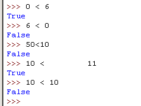
The condition 0 < 6 returns the boolean value True because the number 0 is less than the number 6. But because 6 is not less than 0, the condition 6 < 0 evaluates to False. 50 is not less than 10, so 50<10 is False. 10 is less than 11, so 10 < 11 is True.
But what about 10 < 10? Why does it evaluate to False? Because the number 10 is not smaller than the number 10. They are exactly the same size. If Alice was the same height as Bob, if would be false to say that Alice was shorter than Bob. Likewise, 10 < 10 evaluates to False.
There are some other comparison operators besides <. Here they are:
| Operator Sign | Operator Name | |
| < | Less than | |
| > | Greater than | |
| <= | Less than or equal to | |
| >= | Greater than or equal to | |
| == | Equal to | |
| != | Not equal to |
Let's try typing some conditions into the shell to see how these operators work:
0 > 6
6 > 0
10 > 10
10 == 10
10 == 11
11 == 10
10 != 10
10 != 11
'Hello' == 'Hello'
'Hello' == 'Good bye'
'Hello' == 'HELLO'
'Good bye' != 'Hello'
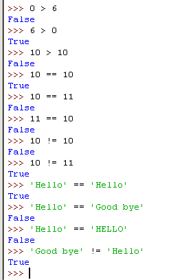
Notice that there is a difference between the assignment operator (the = sign) and the "equal to" comparison operator (the == sign). The = sign is used to assign a value to a variable, and the == sign is used in expressions to see if two values are the same or not. It's easy to accidentally use one when you meant to use the other, so be careful of what you type in.
Now that we have covered what conditions, comparison operators, and booleans are, let's talk about what while statements do.
- while guessesTaken < 6:
The while statement marks the beginning of a loop. Sometimes in our programs, we want the program to do something over and over again. When the execution reaches a while statement, it evaluates the condition next to the while keyword. If the condition evaluates to True, the execution moves inside the while-block. (In our program, the while-block begins on line 13.) If the condition evaluates to False, the execution moves past the while-block. (In our program, the first line after the while-block is line 28.)
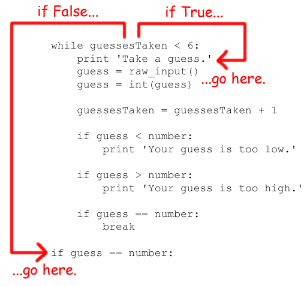
Let's say the condition evaluates to True (which it does the first time, because the value of guessesTaken is 0.) Execution will enter the while-block at line 13 and keep going down. After the reaches the end of the while-block, instead of going down to the next line, it jumps back up to the while statement's line (line 12). It then re-evaluates the condition, and if it is True then we enter the while-block again.
This is how the loop works. As long as the condition is True, we will keep executing the code inside the while-block over and over again until we reach the end of the while-block and the condition is False. So until guessesTaken is equal to or greater than 6, we will keep looping. Think of the while statement as saying, "while this condition is true, keep looping through the code in this block".
- print 'Take a guess.' # There are four spaces in front of print.
- guess = raw_input()
The program will now ask us for a guess. We type in what we guess the number is, and then this is stored in a variable named guess.
- guess = int(guess)
Here we call a new function called int(). The int() function takes one argument. The raw_input() function returned a string of text that player typed. But in our program, we will want an integer, not a string. Remember that Python considers the string '5' and the integer 5 to be different values. So the int() function will take the value we give it and return the integer form of it.
Let's play around with the int() function in the interactive shell. Try typing the following:
int('42')
int(42)
int('hello')
int('forty-two')
int(' 42 ')
2 + int('2')
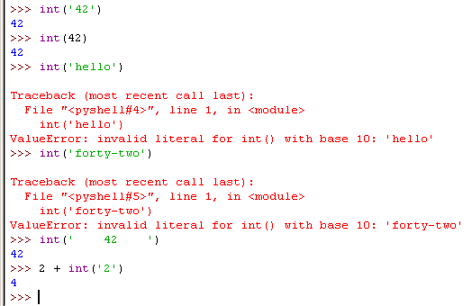
We can see that the int('42') call will return the integer value 42. The int(42) will also do this (though it is kind of pointless to convert an integer to an integer). However, even though you can pass a string to the int() function, you cannot just pass any string. Passing 'hello' to int() (like we do in the int('hello') call) will result in an error. The string we pass to int() must be made up of numbers.
And the integer we pass to int() must be in numbers, it cannot be written out. This is why int('forty-two') also fails and produces an error. The int() function is slightly forgiving, because if our string has spaces on either side, it will still run without error. (This is why the int(' 42 ') call works.)
The 2 + int('2') line shows an expression that adds an integer 2 to the return value of int('2') (which evaluates to 2 as well). The expression evaluates to 2 + 2, which then evaluates to 4. So even though we cannot add an integer and a string (2 + '2' would show us an error), we can add an integer to a string that has been converted to an integer.
The guess variable originally held the string of what the player typed. We will overwrite the string value stored in guess with the integer value returned by the int function.
- guessesTaken = guessesTaken + 1
Now that the player has taken a guess, we want to increase the number of guesses that we remember the player taking. The first time we enter the loop block, guessesTaken has the value of 0. Python will take this value and add 1 to it. 0 + 1 is 1. Then Python will store the new value of 1 to guessesTaken. After this line, the value of guessesTaken will be 1 more than it was previously.
It is easy to think of this line as meaning, "the guessesTaken variable should be one more than what it already is". When we add one to a value, programmers say they are incrementing the value (because it is increasing by one). When we subtract one from a value, programmers say they are decrementing the value (because it is decreasing by one).
- if guess < number:
- print 'Your guess is too low.' # There are eight spaces in front of print.
This is called an if statement. It has a new keyword, if. Next to the if keyword is the condition. The block that follows the if keyword is called an if-block. The if statement is very similar to the while statement. They both have a keyword, followed by a condition, and then a block of code.
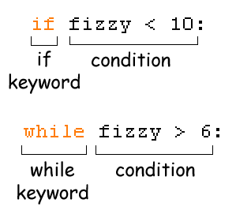
The if statement works almost the same way as a while statement, too. If the condition is True, then execution enters the if-block. If the condition is False, then the execution skips past the if-block. Unlike the while-block, execution does not jump back to the if statement at the end of the if-block. It just continues on down to the next line.
This print statement is the only line inside the if-block. If the integer the player typed is less than the random integer the computer thought up, then we will display to the player "Your guess is too low." If the integer the player entered is equal to or larger than the random integer (in which case, the condition next to the if keyword would have been False), then this block would have been skipped over.
- if guess > number:
- print 'Your guess is too high.'
Here is another if statement. This time, we check if the player's guess is larger than the random integer. If so, we will enter the if-block that follows it. The print line tells the player that their guess is too big.
In case you haven't thought of it, these two conditions cannot both be True. The player's guess (which is stored in the guess variable) can either be higher OR lower than the computer's guess, but it can not be higher AND lower. This means we will never see both messages at the same time. There is one more case to consider, and that is if the guess is equal to the random integer. We will cover this in the next line.
- if guess == number:
- break
This if statement's condition checks to see if the guess is equal to the random integer. If it is, we will enter the if-block that follows it.
The line inside the if-block is just a break statement. The break statement tells the program to immediately jump to the out of the while-block that it is inside of, and to the first line after the end of the while-block. The while statement's condition is not rechecked.
The break statement is just the break keyword by itself, with no condition or colon (the : sign).
If the player's guess is not equal to the random integer, we do not break out of the while-block, we will reach the bottom of the while-block anyway. Once we reach the bottom of the while-block, the program will loop back to the top and recheck the condition (guessesTaken < 6). Remember after the guessesTaken = guessesTaken + 1 line of code executed, the new value of guessesTaken is 1. Because 1 is less than 6, we enter the loop again.
If the player keeps guessing too low or too high, the value of guessesTaken will change to 2, then 3, then 4, then 5, then 6. If the player guessed the number correctly, the condition in the if guess == number statement would be True, and we would have executed the break statement. Otherwise, we keep looping. But when guessesTaken has the number 6 stored, the while statement's condition is False. (6 is not less than 6, rather 6 is equal to 6) Because the while statement's condition is False, we will not enter the loop and instead jump to the end of the while-block.
- if guess == number:
This line of code isn't the same line in line 25. This line has no indentation, and is outside the while-block. When we got out of the while block, it was either because the while statement's condition was False (which happens if the player ran out of guesses) or if we executed the break statement (which happens if the player guessed the number right). On this line we recheck if the player guess correctly, and if so, we enter the if-block that follows.
- guessesTaken = str(guessesTaken)
This line is inside the if-block, and only executes if the condition was True.
This line is like the guess = int(guess) line of code. Here we call the new function str(), which returns the string form of the argument we give it. We want to change the value in guessesTaken (which is an integer) into the string version of itself.
The str() and int() functions are very important, because it is important to know that integers and strings are different data types with different values. The integer 42 and the string '42' are entirely different. But if we ever need to get the value of one data type as a value of another data type, str() and int() can be very handy.
- print 'Good job, ' + name + '! You guessed my number in ' + guessesTaken + ' guesses!'
This line is also inside the if-block, and only executes if the condition was True.
This line will tell the player that they have won, and how many guesses it took them. The reason why we had to change the guessesTaken value into a string is because we can only add strings to other strings. If we tried to add a string to an integer, the Python interpreter would get confused and display an error.
- if guess != number:
This if statement's condition has a new sign. Just like the == sign means "is equal to", the != sign means "is not equal to". If the value of guess is lower than or higher than (and therefore, not equal to) the random number, then this condition evaluates to True, and we would then enter the block that follows this if statement.
- number = str(number)
This line is inside the if-block, and only executes if the condition was True.
In this block, because the player did not guess the random number we will tell them what it is. But first we will have to store the string version of number as the new value of number.
- print 'Nope. The number I was thinking of was ' + number
This line is also inside the if-block, and only executes if the condition was True.
Now we tell the player what the random number was.
At this point, we have reached the end of the source code, so the program terminates.
We've just programmed our first real game! In the last chapter we learned about values and expressions and variables. In this chapter we learned how we can use those along with if, while, and break statements to make the program do different things based on the value of variables or expressions.
Let's go over the code one more time. To help you understand everything, I will briefly go through the program just like the computer would, starting from the top. We will remember what the values of variables are ourselves (you can write them down on a piece of paper as we go). This is called tracing through the program. It's what programmers do to figure out exactly how the program will behave. Some lines of code are executed more than once (because they are inside loops), so we will go over those lines of code more than once.
- # This is a guess the number game.
This line is a comment. The computer will ignore this line, and move down to line 2.
- import random
This line will import the random module so that we can use the randint() function in our program. Line 3 is blank, so the computer will skip ahead to line 4.
- guessesTaken = 0
The computer will create a new variable called guessesTaken, and the integer 0 will be stored inside this variable.
- print 'Hello! What is your name?'
A greeting is displayed to the player.
- myName = raw_input()
The raw_input() function is called, and will let the user type in a string. This string is then stored in a variable called myName. Let's pretend that when the program runs, the player types in Bob. The value of the myName variable is the string, 'Bob'.
- number = random.randint(1, 20)
On line 9 we call the randint() function, which is inside the random module. Because this function is inside a module we imported, we have to put the module name and a period in front of the function name. The two arguments we pass are the integers 1 and 20. This tells the randint() function to return a random integer between 1 and 20 (including 1 and 20). Let's pretend that it returns the integer 8. The value of number will be 8.
- print 'Well, ' + myName + ', I am thinking of a number between 1 and 20.'
Because the value inside myName is the string 'Bob', this will print out Well, Bob, I am thinking of a number between 1 and 20.
- while guessesTaken < 6:
This is the start of a while-block. If the condition is True, then the program execution will enter the while-block. If the condition is False, we will skip past the while-block to line 28. The variable guessesTaken has 0 stored inside of it, and 0 is less than 6, which makes the condition True. So the next line to run is line 13.
- print 'Take a guess.' # There are four spaces in front of print.
We print a message that asks the player to type in a value. There is a comment on this line that the computer ignores. The comment reminds the programmer that we should put four spaces at the beginning of the line because we are now inside a block.
- guess = raw_input()
The player now types in a string, and this string will be stored in the guess variable. Let's pretend that the player typed in the string '12'.
- guess = int(guess)
We want to store the integer value of what the player typed in, not the string value. int() function will return the integer value of the argument we give it. (The argument is the value in between the parentheses next to the function name "int".) The guess variable holds the string '12', so '12' is the argument we pass to the int() function, and the integer value 12 is what the int() function returns. This value is then stored as the new value in the guess variable. After this line runs, guess stores the integer 12 instead of the string '12'.
- guessesTaken = guessesTaken + 1
The value stored in guessesTaken is 0 (this was set on line 4). We want to keep track of how many guesses the player has taken, so we make the new value of guessesTaken to be the current value of guessesTaken plus one. After this line executes, guessesTaken will now hold the integer 1.
- if guess < number:
Now we check if the if-statement's condition is True. The value of guess is the integer 12 (set on line 15), and the value of number is 8 (set on line 9). 12 is not less than 8, so this condition is False. That means we will skip the if-block that follows and go directly to line 22.
- if guess > number:
This if-statement's condition is True, because 12 is larger than 8, so the program execution enters the if-block at line 23.
- print 'Your guess is too high.'
We display a message that tells the player their guess was too high.
- if guess == number:
The condition in this if-statement is False, because 12 is not equal to 8. We skip the if-block that follows. But line 28 has fewer spaces than the four spaces we have been indenting our code inside the while-block. That means we have reached the end of the while-block too, and execution will loop back to the while-statement on line 12.
- while guessesTaken < 6:
The condition for the while-statement is True, because guessesTaken is 1, but 1 is still less than 6. So the program execution enters the while-block at line 13.
- print 'Take a guess.' # There are four spaces in front of print.
We display this message to the player again.
- guess = raw_input()
We get a string typed by the player, and store it in the variable guess. Let's pretend that the user typed in the string '6'. The string '6' is stored in the variable guess, and the old value of 12 is forgotten.
- guess = int(guess)
We want to get the integer value of the string inside guess. We pass the int() function an argument of '6', and it will return 6. The new value of guess is the integer 6.
- guessesTaken = guessesTaken + 1
We want to increase the number of guesses taken by one, so the new value of guessesTaken is the current value (the integer 1) plus one. The new value of guessesTaken is 2.
- if guess < number:
We check to see if this if-statement's condition is True. It is, because 6 is less than 8. That means our program's execution will enter the if-block at line 20.
- print 'Your guess is too low.' # There are eight spaces in front of print.
We display a message to the player tell them that their guess was too low. The stuff after the # pound sign is a comment and is ignored.
- if guess > number:
We check if guess (the integer 6) is greater than number (the integer 8). It is not, so this condition is False and we skip the if-block.
- if guess == number:
We check if guess (the integer 6) is equal to number (the integer 8). It is not, so this condition is False and we skip the if-block. We have reached the end of the while-block, so we jump back to line 12.
- while guessesTaken < 6:
This time when we check the condition, guessesTaken has the value 3. But 3 is still less than 6, so the condition is True and we enter the while-block again.
- print 'Take a guess.' # There are four spaces in front of print.
We ask the player to type in a number again.
- guess = raw_input()
The function call to the raw_input() function lets the player type in a string. Let's pretend that the player types in the string '8'. Then the new value of guess is '8'.
- guess = int(guess)
We want to get the integer value of the string inside guess. We pass the int() function an argument of '8', and it will return 8. The new value of guess is the integer 8.
- guessesTaken = guessesTaken + 1
We want to increase the number of guesses taken by one, so the new value of guessesTaken is the current value (the integer 2) plus one. The new value of guessesTaken is 3.
- if guess < number:
We check if guess (the integer 8) is less than number (the integer 8). It is not. (If I had 8 apples and you had 8 apples, you would not say I had less apples than you because we have an equal number of apples.) This condition is False and we skip the if-block. Next we execute line 22.
- if guess > number:
We check if guess (the integer 8) is greater than number (the integer 8). It is not, so this condition is False and we skip the if-block. Next we execute line 25.
- if guess == number:
We check if guess (the integer 8) is equal than number (the integer 8). It is, so we enter the if-block at line 26.
- break
The break statement tells us to break out of the while-block that we are inside, and go to the first line after the while-block. This will be line 28.
- if guess == number:
We check if guess (the integer 8) is equal than number (the integer 8). It is, so we enter the if-block at line 29.
- guessesTaken = str(guessesTaken)
On this line we convert guessesTaken to the string '3'.
- print 'Good job, ' + myName + '! You guessed my number in ' + guessesTaken + ' guesses!'
Now we display the winning message to the player. The variable myName holds the string value 'Bob' and guesses holds the string value '3', so the final string printed is 'Good job, Bob! You guessed my number in 3 guesses!'
- if guess != number:
This condition will evaluate to False, so we skip past the if-block that follows it. But there is no more code after it, so the program terminates.
This has been our first game! It was kind of long to go through everything and a lot to learn, but now you are a real game programmer. Just for fun, try changing this program to change the way the game behaves.
For example, you can change these lines:
- number = random.randint(1, 20)
- print 'Well, ' + name + ', I am thinking of a number between 1 and 20.'
into these lines:
- number = random.randint(1, 100)
- print 'Well, ' + name + ', I am thinking of a number between 1 and 100.'
and now the computer will think of an integer between 1 and 100.
Or you can change this line:
- while guessesTaken < 6:
into this line:
- while guessesTaken < 4:
and now the player only gets four guesses instead of six guesses.
If someone asked you, "What exactly is programming anyway?" what could you say back to them? Programming is just the action of writing the code for programs, that is, creating programs that can be executed by a computer.
"But what exactly is a program?" When you see someone using a computer program (for example, playing our Guess The Number game), all you see is some text appearing on the screen. The program decides what exact text to show on the screen (which is called the output), based on its instructions and on the text that the player typed on the keyboard (which is called the input). The program has very specific instructions on what text to show the user. A program is a collection of instructions.
"What kind of instructions?" There are only a few different kinds of instructions, really.
And that's it, just those four things. Of course, there are many details about those four types of instructions. In this book you will learn about new data types and operators, new flow control statements besides if, while and break, and several new functions. There are also different types of I/O (input from the mouse or files on the hard drive, and outputting sound and graphics and pictures instead of just text.)
For the person using your programs, they really only care about that last type, I/O. The user types on the keyboard and then sees things on the screen or hears things from the speakers. But for the computer to figure out what sights to show and what sounds to play, it needs a program, and programs are just a bunch of instructions that you, the programmer, have written.
If you have access to the Internet and a web browser, you can go to these web sites and see a "visual tracing" web page that will show each step of the program. This might make it more clear what the Guess the Number program does.
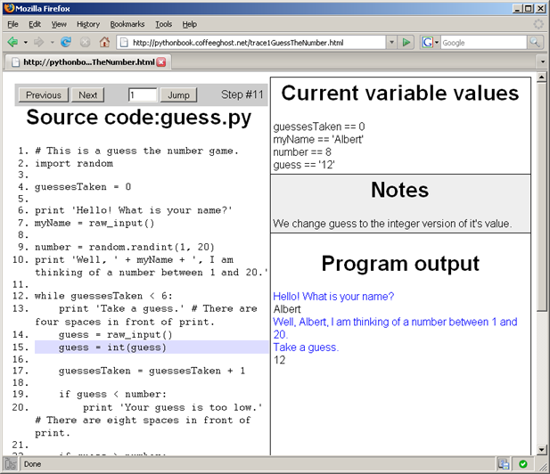
The left side of the web page shows the source code, and the highlighted line is the line of code that is about to be executed. You execute this line and move to the next line by clicking the "Next" button. You can also go back a step by clicking the "Previous" button, or jump directly to a step by typing it in the white box and clicking the "Jump" button.
On the right side of the web page, there are three sections. The "Current variable values" section show you each variable that has been assigned a value, along with the value itself. The "Notes" section will give you a hint about what is happening on the highlighted line. The "Program output" section shows the output from the program, and the input that is sent to the program. (This web page automatically enters text to the program when the program asks.)
So go to each of these web pages and click the "Next" and "Previous" buttons to trace through the program like we did above.
Things Covered In This Chapter:
- import statements
- Modules
- Arguments
- while statements
- Conditions
- Blocks
- Comparison operators
- The difference between = and ==.
- if statements
- The break keyword.
- The str() function.
- The random.randint() function.